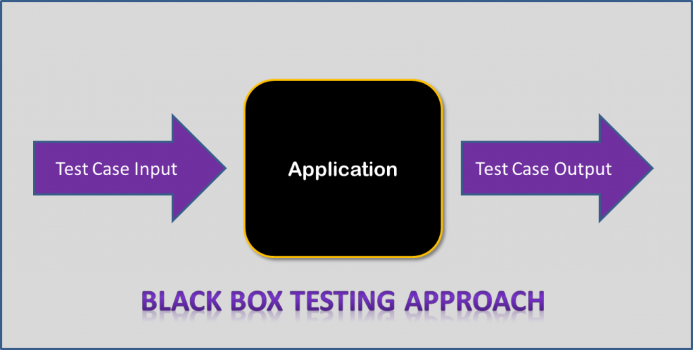
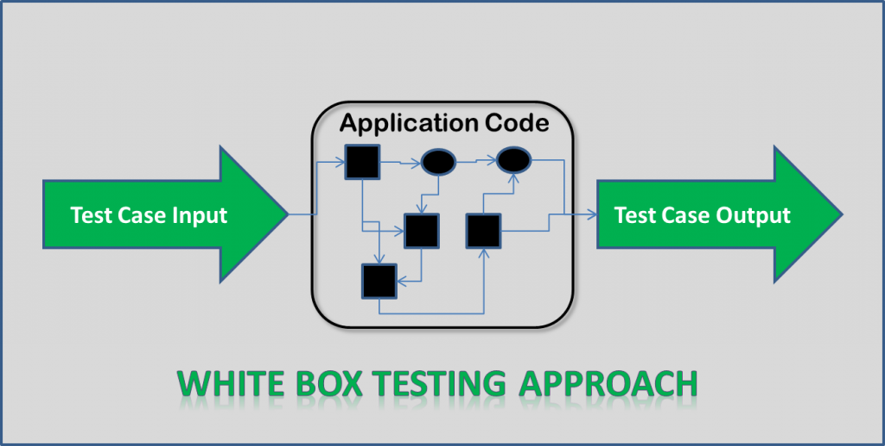

¿Cuáles son los tipos de pruebas software?
Un conjunto de actividades de pruebas suele orientase a comprobar determinados aspectos de un sistema software (o de una parte del mismo). Continuando así con nuestro anterior artículo sobre el modelo de cebolla para los Niveles de Pruebas Software, y siguiendo las directrices del ISTQB, acotaremos los Tipos de Pruebas Software en función del objetivo en que se centran.
En primer lugar tenemos las Pruebas Software Funcionales. Típicamente encontraremos el comportamiento del sistema, subsistema o componente software descrito en especificaciones de requisitos o casos de uso, aunque también puede no estar documentado (“que funcione como el sistema al que sustituye”) . Es decir, con las funciones establecemos “lo que el sistema hace”.

En segundo lugar figuran las Pruebas Software no Funcionales que incluyen las pruebas de: Rendimiento, Carga, Estrés, Usabilidad, Mantenibilidad, Fiabilidad o Portabilidad, entre otras. Por tanto se centran en características del software que establecen “cómo trabaja el sistema“.
En tercer lugar, tenemos las Pruebas Software Estructurales. Nuevamente pueden ejecutarse en todos los niveles de pruebas (ya sabéis: componentes, integración, sistema, etc.) y encajan muy bien si hemos utilizado técnicas de especificación de la estructura o arquitectura del Software. Es posible aplicar técnicas estáticas de análisis de código..

Finalmente, el cuarto tipo de pruebas que nos presenta el ISTQB son las pruebas derivadas de la realización de cambios: las Pruebas Software de Regresión y las Re-pruebas. Una vez que un defecto ha sido corregido, toca volver a probar el software para confirmar que el defecto ha sido eliminado. Son pruebas repetidas o Re-Pruebas..

Referencias
Panel.es, (2018). Obtenido de: https://www.panel.es/blog/software-qa-cuales-son-los-tipos-de-pruebas-software/, Inc.